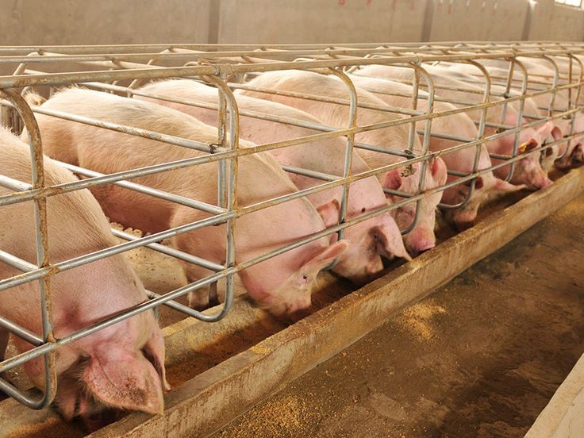

Our Projects
BabyStep Foundation is committed to transforming lives through targeted, sustainable initiatives.

Smile, We Smile
Sector: Agribusiness
Aim: Improving lives of youth and women at family level through pig farming and poultry.
Duration: 2026 – 2030 (4 years)

Menstruate with Pride
Sector: Menstruation Health
Aim: Empower girls aged 15–35 with knowledge and skills to make reusable sanitary pads using locally available resources.
Duration: 2025 – 2030 (5 years)
Target: 1000 girls

Save a Man – #SayNoToSuicide
Sector: Mental Health
Aim: Provide a safe space for men to open up, receive answers and encouragement instead of choosing suicide.
Duration: 2025 – 2030 (5 years)
Target: 1000 men across universities in Malawi